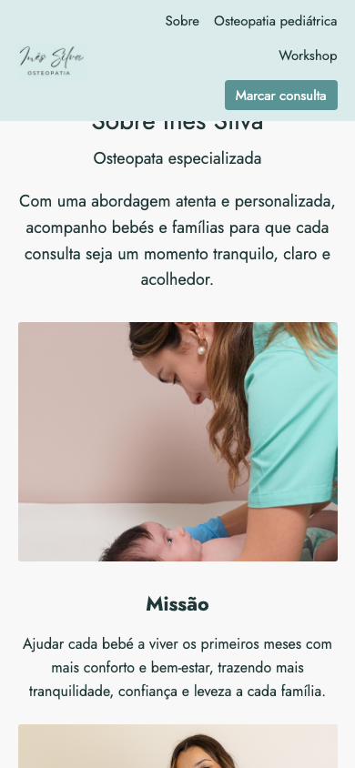
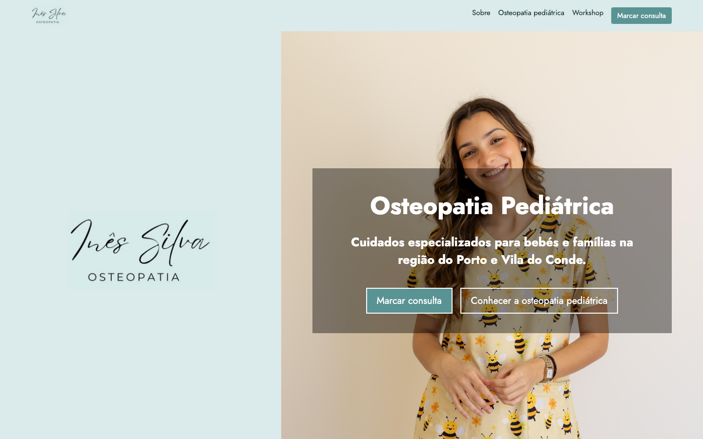
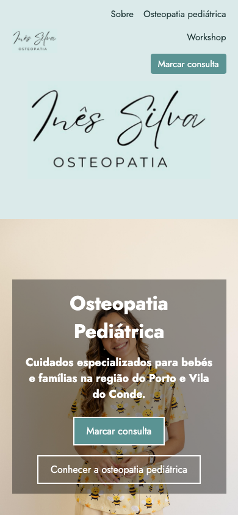

Auditoria UX por heurísticas de Nielsen — execução Playwright
Data2026-09-05
URL127.0.0.1:8000
Viewport1440×900 e 390×844
BrowserChromium / Playwright 1.63.0
Verificações10 heurísticas
Risco globalMédio
Âmbito e pressupostos
Foi auditada a página inicial da branch ux/apply-ux-findings, no percurso de descoberta, informação de serviços e marcação. Foram exercitados links de navegação, CTAs, hover, foco por teclado, scroll completo e vista mobile. As páginas externas de WhatsApp, Google Maps, Escola de Pediatria e redes sociais não fazem parte do âmbito.
Resumo executivo
A versão atual carrega todos os recursos locais e tem CTAs, links de mapa e foco visível. A principal fricção é responsiva: em 390 px, a barra fixa mede 133 px e a âncora “Sobre” deixa o título atrás da barra. Além disso, a secção “Sobre” (1.233 px) não cumpre o objetivo de concentrar sobre, missão e formação numa única vista de ecrã. Os links de navegação não apresentam resposta visual ao hover.
Completude da auditoria
Verificação
Estado
Resultado
Hover em 8 controlos
Concluída
CTAs do hero e WhatsApp mudam de fundo; logo e quatro links da navegação não mudam.
Teclado (10 Tab)
Concluída
Ordem lógica e contorno visível de 3 px em todos os 10 controlos observados.
Scroll e barra fixa
Concluída
Sem saltos; desktop posiciona as âncoras a 72 px. Em mobile, “Sobre” fica parcialmente encoberto.
Consola antes/depois
Concluída
Uma advertência Cookiebot para o domínio local; sem novos erros após interações.
Títulos e dimensões
Concluída
H1 50 px; H2 36 px de secção; H3 24–28 px; corpo 16–18 px.
Mobile/reflow
Concluída
390 px sem overflow horizontal; cabeçalho tem duas linhas e mede 133 px.
Pontuação
4Passa
3Parcial
2Falha
1Não aplicável
Achados
Controlo e orientação
FalhaSeveridade 3
F01 — “Sobre” é ocultado pela barra fixa em mobile
Ao abrir “Sobre” a 390 px, o título “Sobre Inês Silva” começa por baixo do cabeçalho, pelo que a pessoa chega à secção sem ver o seu título integralmente.
Evidência: header com 133 px; captura current-mobile-about.png mostra o título recortado na margem inferior da barra.

F01 — Âncora mobile não compensa integralmente a altura do header.
Recomendação: definir a compensação de scroll a partir da altura efetiva do header em mobile, ou reduzir o header para uma única linha com menu colapsável.
FalhaSeveridade 3
F02 — A secção agrupada “Sobre” excede uma vista de ecrã
O pedido de ver “Sobre”, “Missão” e “Formação” no mesmo enquadramento não é cumprido em desktop (1.145 px vs. viewport de 900 px) nem em mobile (1.233 px vs. 844 px).
Evidência: Playwright mediu 1.145 px para #about a 1440×900 e 1.233 px a 390×844.
Recomendação: em desktop, compactar imagens e copy numa grelha de duas colunas; em mobile, usar cartões mais curtos ou aceitar explicitamente o scroll progressivo dentro da secção.
Consistência e feedback
ParcialSeveridade 2
F03 — Links da navegação não têm estado hover distinto
“Sobre”, “Osteopatia pediátrica” e “Workshop” mantêm cor, fundo e transformação idênticos ao passar o cursor. O botão de “Marcar consulta” também não muda.
Evidência: oito testes hover: apenas os dois CTAs do hero e o WhatsApp alteraram o fundo; os quatro itens da navegação não apresentaram alteração calculada.
Recomendação: adicionar sublinhado, alteração de cor e/ou fundo subtil nos links; aplicar uma variação mais escura ao CTA de navegação.
ParcialSeveridade 1
F04 — O logótipo do header perde legibilidade
O logótipo funcional tem 144×40 px no desktop e torna a assinatura “Osteopatia” difícil de ler. O grande logótipo no painel esquerdo do hero cria ainda uma duplicação visual.
Evidência: captura current-hero.png; o header usa um ficheiro de logótipo com proporção 1216×656 em caixa de 144×40 px.

F04 — A marca no header é pequena face ao detalhe do logótipo.
Recomendação: aumentar ligeiramente a altura do logótipo no header ou usar uma versão compacta/desenhada para navegação.
Correspondência com a realidade e prevenção de erros
ParcialSeveridade 2
F05 — A imagem hero reduz a clareza da proposta
No telemóvel, a imagem vertical fica por trás do painel escuro e o rosto/corpo competem com o título e os dois CTAs. A leitura continua possível, mas a primeira vista torna-se densa.
Evidência: captura current-mobile-hero.png, onde o conteúdo ocupa uma caixa de 351 px sobre a pessoa e é precedido por um painel de logótipo de 359 px.

F05 — A primeira vista mobile contém duas áreas de marca e um painel de CTA sobre a fotografia.
Recomendação: em mobile, reduzir a área do logótipo inicial ou colocar a fotografia como faixa menor, dando prioridade ao título e à marcação.
ParcialSeveridade 1
F06 — Cookiebot emite advertência no ambiente local
A consola informa que 127.0.0.1 não está autorizado para o grupo Cookiebot. Não surgiram erros novos ao navegar, mas a advertência reduz a fidelidade do teste local de consentimento.
Evidência: consola antes da interação: “The domain 127.0.0.1 is not authorized to show the cookie banner”. Após os cliques e scrolls: zero novas mensagens.
Recomendação: adicionar o domínio de desenvolvimento autorizado no Cookiebot ou condicionar o script de consentimento ao ambiente de produção.
Matriz de prioridades
Prioridade
Problema
Esforço
Ação
P1
F01 Título oculto por header mobile
Pequeno
Corrigir a compensação da âncora ou colapsar a navegação mobile.
P1
F02 Secção Sobre acima de uma viewport
Médio
Reorganizar grelha e reduzir altura dos cartões.
P2
F03 Hover sem feedback
Pequeno
Acrescentar estados hover ao nav e CTA fixo.
P3
F04/F05 Hierarquia visual hero
Médio
Introduzir logótipo de navegação e compactar hero mobile.
P3
F06 Cookiebot local
Pequeno
Configurar domínio de desenvolvimento.
Metodologia
Avaliação pelas 10 heurísticas de Nielsen, com Playwright/Chromium 1.63.0. Foram medidos estados CSS, dimensões computadas, alturas e posições, recursos carregados e consola. As 10 tabulações foram: salto para conteúdo, logótipo, 4 itens de navegação, 2 CTAs hero, workshop e WhatsApp — todos com foco visível de 3 px. Não foram detetados carrosséis.
Confiança e lacunas
Confiança: alta. Os resultados de layout, foco, hover, scroll, consola e recursos são observados diretamente no browser. Os percursos após os links externos e a resposta real de utilizadores não foram testados. A advertência Cookiebot aplica-se a 127.0.0.1; deve ser confirmada no domínio de produção antes de ser tratada como problema de utilizador final.